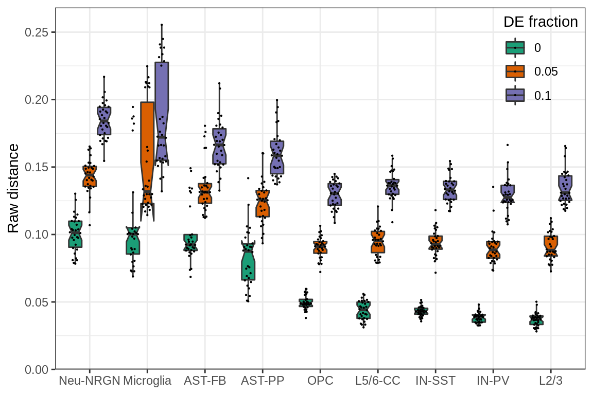
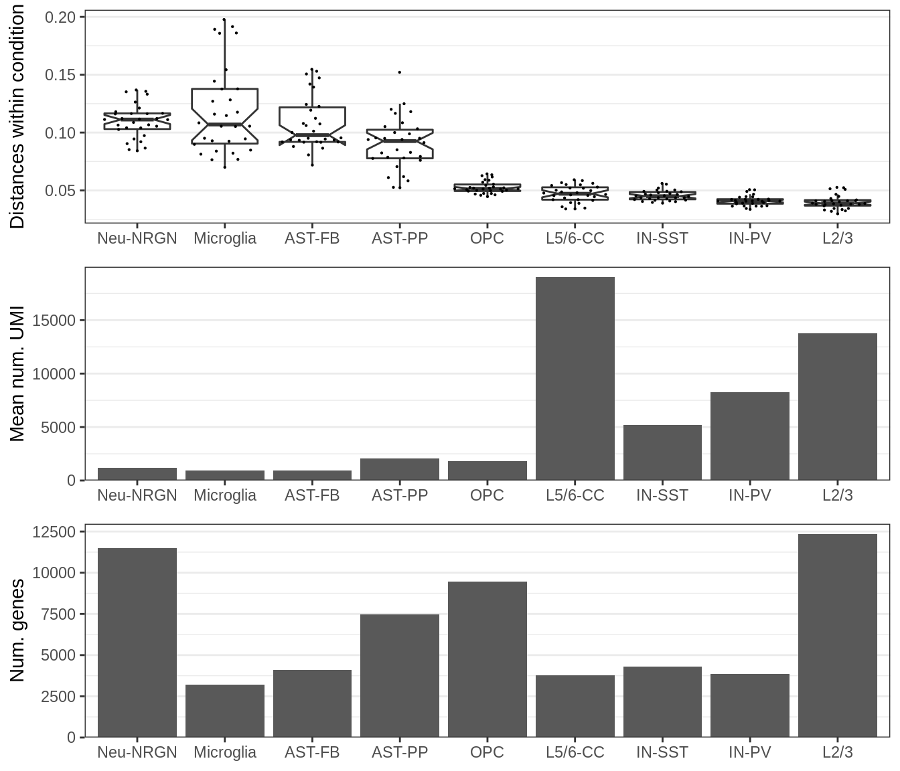
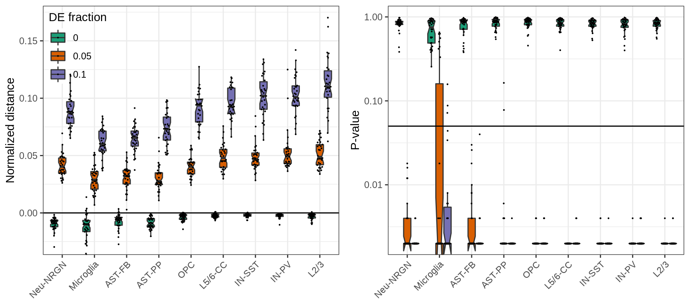
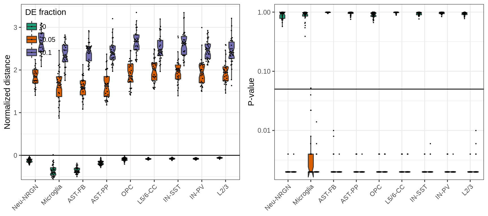
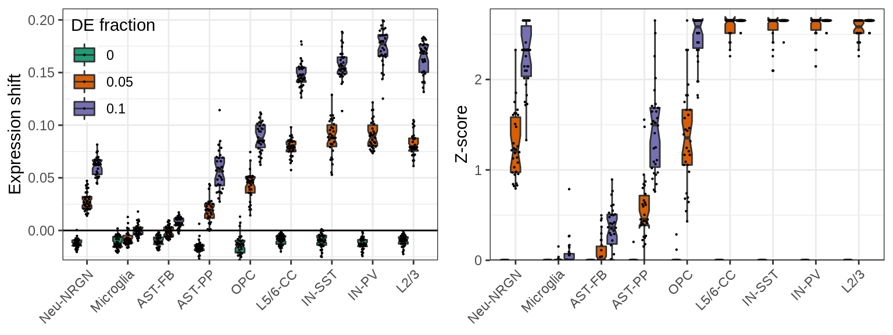
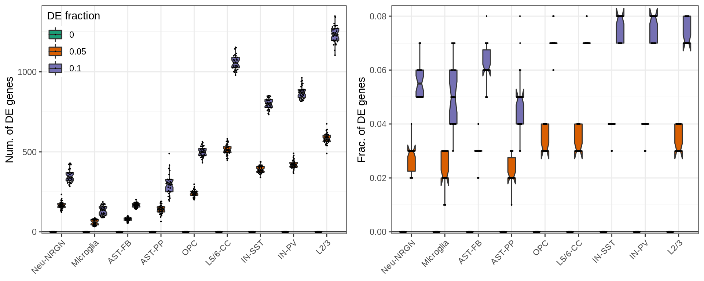

Last updated: 2021-12-12
Checks: 7 0
Knit directory: cacoaAnalysis/
This reproducible R Markdown analysis was created with workflowr (version 1.6.2). The Checks tab describes the reproducibility checks that were applied when the results were created. The Past versions tab lists the development history.
Great! Since the R Markdown file has been committed to the Git repository, you know the exact version of the code that produced these results.
Great job! The global environment was empty. Objects defined in the global environment can affect the analysis in your R Markdown file in unknown ways. For reproduciblity it’s best to always run the code in an empty environment.
The command set.seed(20211123) was run prior to running the code in the R Markdown file. Setting a seed ensures that any results that rely on randomness, e.g. subsampling or permutations, are reproducible.
Great job! Recording the operating system, R version, and package versions is critical for reproducibility.
Nice! There were no cached chunks for this analysis, so you can be confident that you successfully produced the results during this run.
Great job! Using relative paths to the files within your workflowr project makes it easier to run your code on other machines.
Great! You are using Git for version control. Tracking code development and connecting the code version to the results is critical for reproducibility.
The results in this page were generated with repository version 55525bf. See the Past versions tab to see a history of the changes made to the R Markdown and HTML files.
Note that you need to be careful to ensure that all relevant files for the analysis have been committed to Git prior to generating the results (you can use wflow_publish or wflow_git_commit). workflowr only checks the R Markdown file, but you know if there are other scripts or data files that it depends on. Below is the status of the Git repository when the results were generated:
Ignored files:
Ignored: .Rhistory
Ignored: .Rproj.user/
Ignored: analysis/simulation_ns_nc.nb.html
Ignored: analysis/simulation_types.nb.html
Ignored: cache/
Ignored: data/ASD/
Ignored: man/
Note that any generated files, e.g. HTML, png, CSS, etc., are not included in this status report because it is ok for generated content to have uncommitted changes.
These are the previous versions of the repository in which changes were made to the R Markdown (analysis/simulation_types.Rmd) and HTML (docs/simulation_types.html) files. If you’ve configured a remote Git repository (see ?wflow_git_remote), click on the hyperlinks in the table below to view the files as they were in that past version.
| File | Version | Author | Date | Message |
|---|---|---|---|---|
| Rmd | 55525bf | Viktor Petukhov | 2021-12-12 | Simulation notebooks |
WARNING: this notebook takes hours of computations using 50 cores and requires 500+ Gb RAM.
In these simulations we used muscat to generate artificial data from the Autism dataset. It allowed us to vary individual covariates, fixing the amount of the actual expression change. For each set of parameters we performed 30 repeats and estimated median distance and p-value (when available) for corresponding metrics.
con <- DataPath("ASD/con.rds") %>% readr::read_rds() %>% Conos$new()
cm <- con$getJointCountMatrix(raw=TRUE) %>% t()
sces <- readOrCreate(CachePath('asd_sim_sces.rds'), function() {
sample.per.cell <- con$getDatasetPerCell()
sample.groups <- con$misc$sample_metadata$diagnosis
cell.groups <- con$misc$cell_metadata$cellType
# Manually selected by coverage and to vary num. UMIs per type
selected.types <- c("AST-FB", "Microglia", "Neu-NRGN", "OPC", "AST-PP",
"IN-SST", "IN-PV", "L2/3", "L5/6-CC")
selected.types %>% setNames(., .) %>% mclapply(function(ct) {
prepareSCEForSimulaton(cm, sample.per.cell=sample.per.cell, cell.groups=cell.groups,
sample.groups=sample.groups, ref.group="Control", subgroups=ct)
}, mc.cores=N_CORES, mc.preschedule=TRUE)
}, force=FORCE)Muscat doesn’t allow varying number of genes per cell type properly, so we simulated data from different cell types and visualized dependencies of the resulting distances on the parameters of these cell types. It does not allow to analyze possible sources of variation independently, but still provides some understanding of the dependencies.
n_cores_outer <- min(N_CORES, length(sces))
n_cores_inner <- max(N_CORES %/% length(sces), 1)
sims_types <- readOrCreate(CachePath('asd_sims_types.rds'), function() {
lapply(c(0.0, 0.05, 0.1), function(def) {
plapply(names(sces), function(n) {
generateSims(sces[[n]]$prep, n.cells=N_CELLS, de.frac=def, n.cores=n_cores_inner, lfc=LFC,
n.samples=N_SAMPLES, suffix=n, n.repeats=N_REPEATS)
}, n.cores=n_cores_outer, mc.allow.recursive=TRUE, progress=TRUE) %>% joinSims()
})
}, force=FORCE)
caos_types <- readOrCreate(CachePath('asd_caos_types.rds'), function() {
plapply(sims_types, function(sim) {
cao <- suppressWarnings(cacoaFromSim(sim, n.cores=N_CORES %/% 3))
cao$estimateExpressionShiftMagnitudes(verbose=FALSE, n.permutations=500,
min.samp.per.type=MIN_SAMPS)
cao$estimateExpressionShiftMagnitudes(
verbose=FALSE, n.permutations=500, top.n.genes=TOP_N_GENES, n.pcs=N_PCS,
min.samp.per.type=MIN_SAMPS, name='es.top.de'
)
cao$estimateDEPerCellType(independent.filtering=TRUE, n.cores=N_CORES %/% 3, verbose=FALSE)
cao
}, n.cores=3, progress=TRUE, mc.allow.recursive=TRUE, mc.preschedule=TRUE)
}, force=FORCE)n_genes_per_type <- con$misc$cell_metadata$cellType %>% {split(names(.), .)} %>%
sapply(function(ns) sum(colSums(cm[,ns]) > 0))
mean_expr_per_type <- con$misc$cell_metadata$cellType %>% {split(names(.), .)} %>%
sapply(function(ns) sum(colSums(cm[,ns]))) %>% {. / n_genes_per_type[names(.)]}
covar_df <- mean_expr_per_type %>%
{tibble(ME=., NG=n_genes_per_type[names(.)], Type=names(.))}
p_df <- lapply(1:3, function(i) {
df <- prepareExpressionShiftSimDf(caos_types[[i]]$test.results$expression.shifts,
sims=sims_types[[i]])
top.de.res <- caos_types[[i]]$test.results$es.top.de
es.top <- top.de.res$dists.per.type %>% sapply(median)
n.de <- sapply(caos_types[[i]]$test.results$de, function(de) sum(de$res$padj < 0.05))
n.genes <- table(sims_types[[i]]$gene.info$cluster.id)
df$NumDE <- n.de[df$Type]
df$FracDE <- round(df$NumDE / n.genes[df$Type], 2)
df$ESTop <- es.top[df$Type]
df$ESTopPValue <- top.de.res$pvalues[df$Type]
df
}) %>% bind_rows() %>% mutate(de.frac=as.factor(de.frac))
type_order <- p_df %>% filter(de.frac == '0') %>% group_by(suffix) %>%
summarise(RawDist=median(RawDist)) %>% arrange(-RawDist) %>% .$suffix
p_df$suffix %<>% factor(levels=type_order)plotExpressionShiftSimDf(p_df, x.col='suffix', norm.dist=FALSE, covar.col='de.frac',
covar.title='DE fraction') +
cacoa:::theme_legend_position(c(1, 1)) + theme(axis.title.x=element_blank())
The plot shows raw expression distances between conditions (y-axis) simulated from different cell types (x-axis) and different fraction of DE genes (color). Each dot on the plot is median distance between the two conditions for one simulation.
It can be seen that there is a lot of variation for the same DE fraction, even if it is set to 0.0. To explain the variation we may plot different cell type specific covariates.
edr <- caos_types[[1]]$test.results$expression.shifts
tpg <- sims_types[[1]]$params %$% setNames(suffix, cluster.id)
p_df2 <- lapply(edr$p.dist.info, cacoa:::subsetDistanceMatrix,
sample.groups=edr$sample.groups, cross.factor=FALSE) %>%
sapply(median) %>% {tibble(Dist=., Cluster=names(.))} %>%
mutate(Type=factor(tpg[Cluster], levels=type_order))
gg_within <- ggplot(p_df2, aes(x=Type, y=Dist)) +
geom_boxplot(notch=TRUE, outlier.alpha=0) +
ggbeeswarm::geom_quasirandom(size=0.1) +
theme(panel.grid.major.x=element_blank(), axis.title.x=element_blank()) +
ylab("Distances within condition")
ggs_covar <- mapply(function(yc, yl) {
ggplot(na.omit(mutate(covar_df, Type=factor(Type, levels=type_order)))) +
geom_bar(aes_string(x='Type', y=yc), stat="identity") +
scale_y_continuous(expand=c(0, 0, 0.05, 0), name=yl) +
theme(panel.grid.major.x=element_blank(), axis.title.x=element_blank())
}, c("ME", "NG"), c("Mean num. UMI", "Num. genes"), SIMPLIFY=FALSE)
plot_grid(gg_within, plotlist=ggs_covar, ncol=1, align='v')
This plot shows the number of expressed genes in real data (bottom), mean number of molecules per gene in real data (middle) and median distance between samples within the same condition for DE fraction set to 0.00 (top).
First, it can be seen that the distances within the same cell type are generally higher for cell types with low coverage. Second, variation between samples within the condition appear to be the main driver of the distances between the conditions.
Normalizing distances as we do to estimate expression shifts we can greatly reduce those biases:
p.theme <- theme(axis.text.x=element_text(angle=45, hjust=1), axis.title.x=element_blank()) +
cacoa:::theme_legend_position(c(0, 1))
ggs <- plotExpressionShiftSimDf(p_df, x.col='suffix', norm.dist=TRUE, covar.col='de.frac',
covar.title='DE fraction', adj.list=list(p.theme),
build.panel=FALSE)
ggs[[2]] %<>% {. + theme(legend.position="none")}
plot_grid(plotlist=ggs, ncol=2)
And here, focusing on top genes reduces biases even more:
ggs <- p_df %>% mutate(NormDist=ESTop, pvalue=ESTopPValue) %>%
plotExpressionShiftSimDf(x.col='suffix', norm.dist=TRUE, covar.col='de.frac',
covar.title='DE fraction', adj.list=list(p.theme),
build.panel=FALSE)
ggs[[2]] %<>% {. + theme(legend.position="none")}
plot_grid(plotlist=ggs, ncol=2)
cao_cf_per_type_types <- readOrCreate(CachePath('asd_cao_cf_per_type_types.rds'), function() {
cons_types <- lapply(sims_types, generateConsForClustFree, n.cores=N_CORES)
lapply(cons_types, function(ci) {
generateCacoaFromConsForClustFree(ci$con.per.type, ci$sim, n.cores=N_CORES)
})
}, force=FORCE)Cluster-free estimates are the most sensitive to variation in the data. They still work to prioritize cell types with adequate variation, but are likely to miss variable cell types:
cf_df <- lapply(1:3, function(pi) {
caos <- cao_cf_per_type_types[[pi]]
params <- sims_types[[pi]]$params
z.scores <- sapply(caos, function(cao)
median(cao$test.results$cluster.free.expr.shifts$z_scores, na.rm=TRUE))
sapply(caos, function(cao)
median(cao$test.results$cluster.free.expr.shifts$shifts, na.rm=TRUE)) %>%
prepareExpressionDistDf(params=params) %>%
inner_join(params, c("Type"="cluster.id")) %>%
mutate(ns=factor(paste0(ns), levels=paste0(sort(unique(ns)))), z_score=z.scores[Type])
}) %>% bind_rows() %>%
mutate(de.frac=paste0(de.frac), suffix=factor(suffix, levels=levels(p_df$suffix)))
ggs <- mapply(function(dc, dn) {
plotExpressionShiftSimDf(cf_df, x.col='suffix', dist.col=dc, covar.col='de.frac',
covar.title='DE fraction', adj.list=list(p.theme, ylab(dn)))
}, c('value', 'z_score'), c("Expression shift", "Z-score"), SIMPLIFY=FALSE)
ggs[[2]] %<>% + theme(legend.position="none")
plot_grid(plotlist=ggs, ncol=2)
Finally, below is the same plot for the number of significant DE genes. By design of the simulations, the number of DE genes linearly depends on the total number of genes. So, the right plot shows the fraction of DE genes, which also depends (slightly) on the variation within each cell types. It is up to debate, which of these measures should be used for real world examples, though.
ggs <- mapply(function(yc, yl) {
plotExpressionShiftSimDf(p_df, x.col='suffix', dist.col=yc, covar.col='de.frac',
covar.title='DE fraction') +
scale_y_continuous(expand=c(0.01, 0, 0.05, 0), name=yl) +
p.theme
}, c("NumDE", "FracDE"), c("Num. of DE genes", "Frac. of DE genes"), SIMPLIFY=FALSE)
ggs[[2]] %<>% + theme(legend.position="none")
plot_grid(plotlist=ggs, ncol=2)
sessionInfo()R version 4.1.1 (2021-08-10)
Platform: x86_64-pc-linux-gnu (64-bit)
Running under: Ubuntu 18.04.6 LTS
Matrix products: default
BLAS: /usr/lib/x86_64-linux-gnu/blas/libblas.so.3.7.1
LAPACK: /usr/lib/x86_64-linux-gnu/lapack/liblapack.so.3.7.1
locale:
[1] C
attached base packages:
[1] stats graphics grDevices utils datasets methods base
other attached packages:
[1] cacoaAnalysis_0.1.0 sccore_1.0.0 dataorganizer_0.1.0
[4] conos_1.4.4 igraph_1.2.9 cacoa_0.2.0
[7] Matrix_1.3-4 cowplot_1.1.1 forcats_0.5.1
[10] stringr_1.4.0 dplyr_1.0.7 purrr_0.3.4
[13] readr_2.0.1 tidyr_1.1.4 tibble_3.1.6
[16] ggplot2_3.3.5 tidyverse_1.3.1 magrittr_2.0.1
[19] workflowr_1.6.2
loaded via a namespace (and not attached):
[1] N2R_0.1.1 readxl_1.3.1 backports_1.4.0
[4] circlize_0.4.13 plyr_1.8.6 splines_4.1.1
[7] usethis_2.0.1 urltools_1.7.3 digest_0.6.29
[10] foreach_1.5.1 htmltools_0.5.2 fansi_0.5.0
[13] RMTstat_0.3 memoise_2.0.0 cluster_2.1.2
[16] doParallel_1.0.16 tzdb_0.1.2 remotes_2.4.0
[19] ComplexHeatmap_2.8.0 modelr_0.1.8 matrixStats_0.61.0
[22] R.utils_2.10.1 prettyunits_1.1.1 colorspace_2.0-2
[25] rvest_1.0.2 ggrepel_0.9.1 pagoda2_1.0.7
[28] haven_2.4.3 xfun_0.28 callr_3.7.0
[31] crayon_1.4.2 jsonlite_1.7.2 brew_1.0-6
[34] iterators_1.0.13 ape_5.5 glue_1.5.1
[37] gtable_0.3.0 GetoptLong_1.0.5 leidenAlg_0.1.1
[40] pkgbuild_1.2.0 Rook_1.1-1 shape_1.4.6
[43] BiocGenerics_0.38.0 scales_1.1.1 DBI_1.1.1
[46] Rcpp_1.0.7 clue_0.3-59 stats4_4.1.1
[49] httr_1.4.2 RColorBrewer_1.1-2 ellipsis_0.3.2
[52] farver_2.1.0 pkgconfig_2.0.3 R.methodsS3_1.8.1
[55] sass_0.4.0 dbplyr_2.1.1 utf8_1.2.2
[58] labeling_0.4.2 tidyselect_1.1.1 rlang_0.4.12
[61] reshape2_1.4.4 later_1.3.0 munsell_0.5.0
[64] cellranger_1.1.0 tools_4.1.1 cachem_1.0.6
[67] cli_3.1.0 generics_0.1.1 devtools_2.4.2
[70] broom_0.7.10 evaluate_0.14 fastmap_1.1.0
[73] yaml_2.2.1 processx_3.5.2 knitr_1.36
[76] fs_1.5.0 nlme_3.1-152 whisker_0.4
[79] ggrastr_0.2.3 R.oo_1.24.0 grr_0.9.5
[82] xml2_1.3.3 compiler_4.1.1 rstudioapi_0.13
[85] beeswarm_0.4.0 png_0.1-7 testthat_3.0.4
[88] reprex_2.0.1 bslib_0.3.0 stringi_1.7.6
[91] highr_0.9 drat_0.2.1 ps_1.6.0
[94] desc_1.4.0 lattice_0.20-44 vctrs_0.3.8
[97] pillar_1.6.4 lifecycle_1.0.1 triebeard_0.3.0
[100] jquerylib_0.1.4 GlobalOptions_0.1.2 irlba_2.3.3
[103] Matrix.utils_0.9.8 httpuv_1.6.3 R6_2.5.1
[106] promises_1.2.0.1 gridExtra_2.3 vipor_0.4.5
[109] IRanges_2.26.0 sessioninfo_1.1.1 codetools_0.2-18
[112] MASS_7.3-54 assertthat_0.2.1 pkgload_1.2.4
[115] rprojroot_2.0.2 rjson_0.2.20 withr_2.4.3
[118] S4Vectors_0.30.0 mgcv_1.8-37 parallel_4.1.1
[121] hms_1.1.0 grid_4.1.1 rmarkdown_2.11
[124] dendsort_0.3.4 Cairo_1.5-12.2 Rtsne_0.15
[127] git2r_0.29.0 lubridate_1.8.0 ggbeeswarm_0.6.0